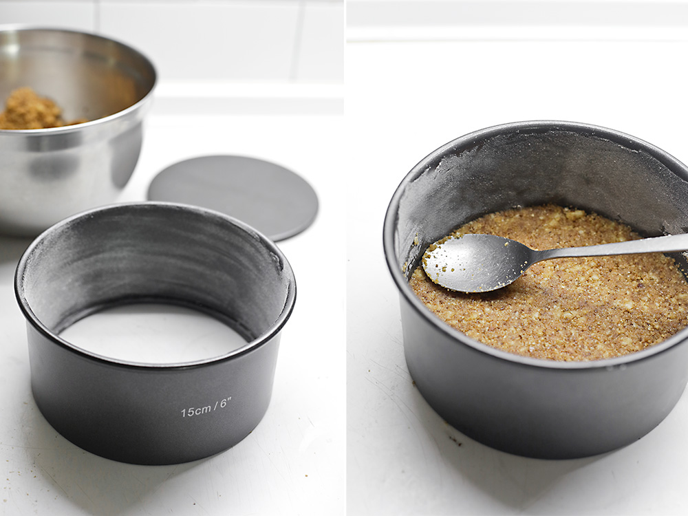
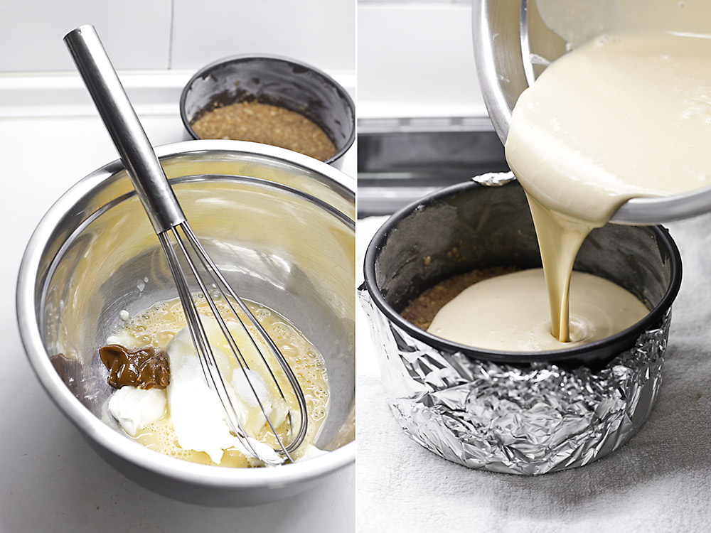
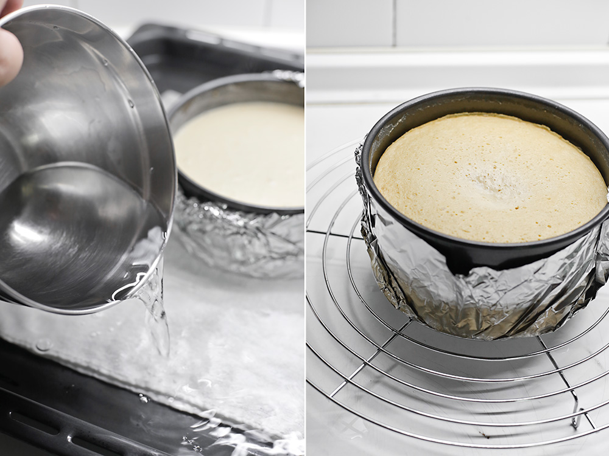
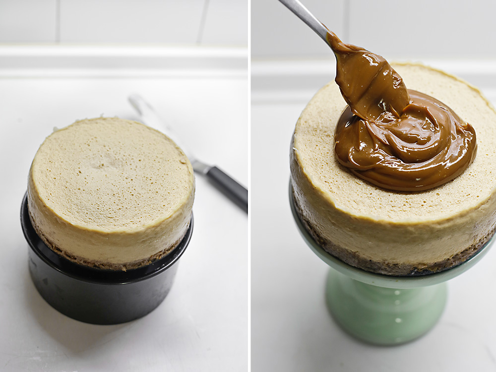

Para la base de galletas:
Para el Cheesecake:
Calentamos el horno a 160º C. y untamos los bordes de nuestro molde de 15 cm de diámetro desmontable con mantequilla y harina.
Para hacer la base de galletas mezclamos las nueces, la canela, la mantequilla y el azúcar moreno con las galletas trituradas, y cubrimos el fondo del molde con la mezcla para formar la base.
Batimos el queso crema con el azúcar, el dulce de leche y los huevos en un cuenco hasta obtener una crema homogénea.
Cubrimos el molde con papel de aluminio, lo colocamos dentro de una bandeja de horno con un paño doble en el fondo, y llenamos con la masa.
Echamos agua caliente en la bandeja y horneamos al baño María durante 30 o 40 minutos o hasta que la tarta haya cuajado completamente.
Sacamos del horno, la dejamos templar un poco y la sacamos del baño María. Dejamos enfriar completamente sobre una rejilla y la refrigeramos durante al menos 4 horas.
Sacamos la tarta de queso de la nevera y la desmoldamos. Pasamos una espátula con cuidado por los bordes y colocamos un tazón, con la altura del aro, debajo, y a continuación bajamos el aro con cuidado.
Cubrimos la superficie con una buena capa de dulce de leche ayudándonos con una cuchara, y la colocamos sobre nuestro stand de cerámica.
